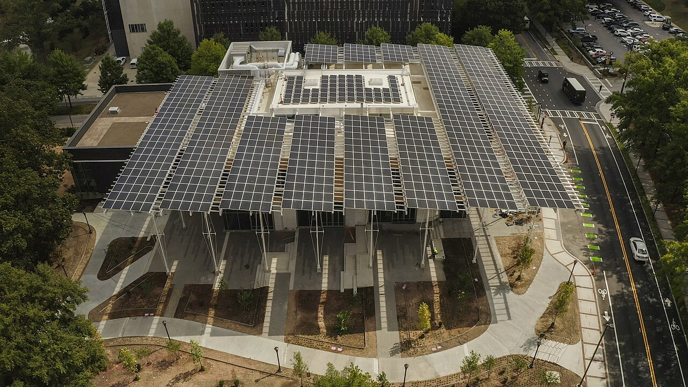

Building History
A Living Building Challenge–certified building built around sustainable water and energy systems.
Photo by JJonahJackalope (2020), CC BY-SA 4.0; cropped and darkened for the hero.
The Kendeda Building at Georgia Tech shows how the university is becoming more committed to sustainability and friendly design. Before the Kendeda Building was built Georgia Tech had already started adding landscaping using resources more carefully and making ecological improvements across its campus master plan. In 2015 the Kendeda Fund gave Georgia Tech a $30 million grant to create an educational and research center that focuses on sustainability. Construction began in 2018 turning a parking lot into a building that cares for the environment. The design of the Kendeda Building uses panels collects rainwater runs efficient HVAC systems and includes sustainable landscaping. After the Kendeda Building finished in 2019 it became the Living Building, in Georgia to receive full Living Building Challenge certification in 2021. Since that time researchers have kept studying the Kendeda Building’s performance looking at how the Kendeda Building’s HVAC system can gather extra water from condensation and how the Kendeda Building’s water systems save natural resources. The sustainable construction methods of the Kendeda Building also show how technology and teamwork can reduce waste and make building efficiency better. Today the Kendeda Building stands as an example of how sustainable architecture can help both buildings and the surrounding environment and it pushes other institutions to use greener building practices.
